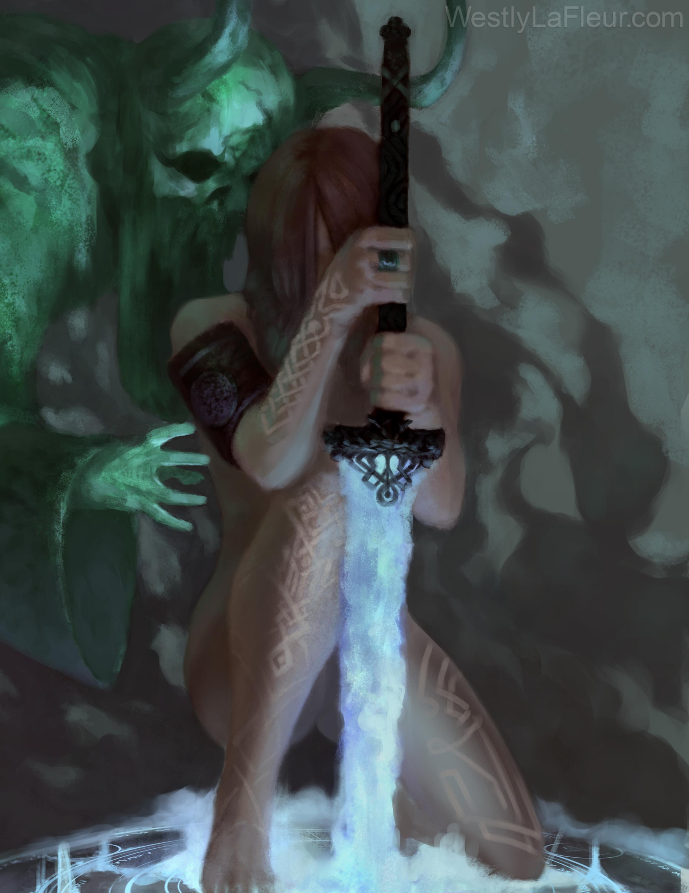
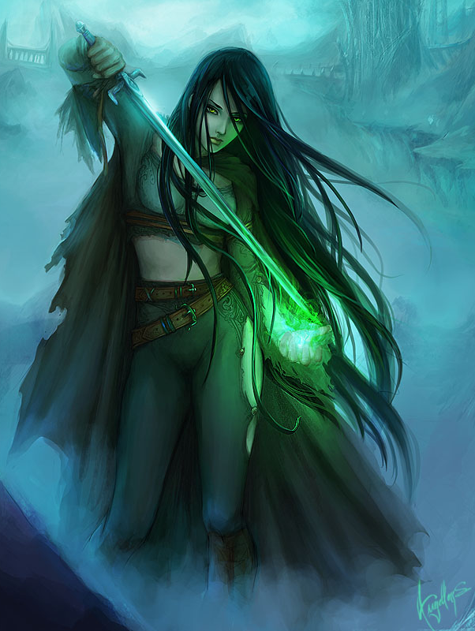

Spirits of War
A guide to the Phantom Blade Spiritualist
(author: Moonheart, last updated: 04/07/2018)

I - Introduction
Why this guide?
Options and Ratings
Understanding the gap: Why the Phantom Blade is -NOT- a Magus
II - Spells
General important concepts and pitfalls
Cantrips
First Level Spells
Second Level Spells
Third Level Spells
Fourth Level Spells
Fifth Level Spells
Sixth Level Spells
III - The phantom weapon
Weapon’s personality
Base properties
Ectoplasmic abilities
Familiars
IV - Strength and weaknesses
Offense
Defense
V - Main building choices
Dexterity versus Strength
Shape of Phantom weapon
Use of save-or-suck spells
VI - Build components
Races
Feats
Skills
Equipment
VII - Managing encumbrance
VIII - Build ideas
Specialist build: “Mindshocker”
Versatile build : “Spirit of Mercy”
Mixed build : “Death Blade”
Unarmed build: “Phantom Dragon”
I - Introduction
Why this guide?
The gish, a weapon master using magic to enhance his martial abilities, is very old kind of character that have been present since multiclassing exist.
In Pathfinder, the class which has been incarnating the gish concept is the Magus, weaving martial and arcane abilities together through his signature abilities Spell Combat and Spellstrike.
However, since the release of Psychic Anthology in 2017, there is another class that gained access to those two abilities: the Spiritualist, through its Phantom Blade archetype.
This archetype looks like a weird mix between the Bladebound (gaining a black blade as a signature weapon), the Mindblade (gaining the ability to reshape his weapon and using psychic magic) and the Esoteric (gaining the ability to use Spellstrike while unarmed) magus’ archetype… but at the same time, it is completely a different animal from any Magus you could try to build.
Reading a Magus guide can give you some ideas for a Phantom Blade, but in many ways it will also mislead you… this is why this guide to the Phantom Blade archetype exist, providing insight centered on this archetype only.
Options and Ratings
As many Pathfinder guides, the present document use a simple color code to rate the different options in each section:
- Terrible - This option has either a great chance to never do something for you, or harm you instead of helping you. Do not take it
- Bad - It can do something for you, but that’s just not worth the cost or you can find strictly better for the same price.
- Average - It’s somewhat an acceptable option, nobody will take you for a fool to pick it, but that’s not something that will make you truly powerful either
- Good - That’s a very good option, that you should consider to pick as soon you’ll have enough resources for.
- Outstanding - Almost mandatory, this should be your first pick unless you have a truly specific plan in mind.
Understanding the gap: Why the Phantom Blade is -NOT- a Magus
The Phantom Blade is a powerful gish, but he’s a completely different animal from the Magus, for one very important reason: 90% of the Spiritualist spell list is made of spells that are not common with the Magus spell list.
Among many many differences, the Phantom Blade lack all the spells around which most of the Magus character are built, like Shocking Grasp and Blade Rush, for example.
The Spiritualist spell list is not however inferior to the Magus one, it’s just that it is built from the Cleric spell list, while Magus spell list is made out of the Wizard spell list.
As a result, the Spiritualist have a lot less of good damage option, but a lot more of good sustain/survival options.
This fact change a lot of things, like, as an example: a Phantom Blade do not gain as much benefit as a Magus from critical hits, because the best touch spells a Phantom Blade has are not damage touch spells, but save-or-suck touch spells.
On the other hand, this very nature of the best touch spell for this archetype tend to make the DC more important than they are on a Magus.
Also, while the best role a Magus can fit is the one of a Striker, the Phantom Blade, with his large arsenal of survival tool, is best suited as an off-tank, or even has the main tank of the party.
He’s simply a lot sturdier than a Magus, featuring spells to heal himself, to remove his own afflictions, to prevent cripple the foe trying to hit him, and much more...
Phantom Blade vs Magus archetypes
Since the Magus spell list is truly good and the Phantom Blade is quite close to several Magus archetype, someone could wonder why not simply play one of those archetypes instead.
Here is a list of some key differences between the Phantom Blade against every of those archetypes:
- vs Bladebound Magus:
The phantom weapon is superior to the black blade on several notable points.
- If can take more different shapes: blunt weapons, piercing weapons, unarmed strikes, and even two-handed weapons if you are not scared of screwing your ability to use Spell Combat.
- It naturally features the Ghost Touch quality which is a big help against incorporeal enemies
- It is even harder to destroy than a black blade, and does not even requires to keep one point in the pool for this
- It can be teleported back as swift actions or be given some properties a black blade can’t have (like Dancing or Disruption)
- vs Esoteric Magus:
The phantom weapon can transfer his alteration bonus and Ghost Touch quality to the Phantom Blade’s unarmed attack, which is a much better advantage than being considered as having two more level in the monk table to determine the base unarmed damage bonus since it applies also to the attack rolls, and allow to bypass damage resistances.
The Phantom Blade also have access to more qualities it can give to his unarmed attacks by spending points from its pool
- vs Mindblade Magus:
Psychic magic gives a +10 DC to concentration check as a penalty each time you attempt to cast a spell next to an enemy, which is a huge drawback for a melee character.
A psychic caster can spend a move action to “center” himself and cancel that penalty, but it means that the Mindblade must forfeit on using Spell Combat to do so.
The Phantom Blade solve this concern by allowing his phantom weapon to help his master to concentrate, transforming this move action into a swift action, and then later in a free action.
This allow the Phantom Blade to use Spell Combat when adjacent to an enemy without suffering any form of penalty to his concentration DC, which is truly great.
As a compensation, a Mindblade can use a two-handed weapon with Spell Combat, while a Phantom Blade cannot.
The true difference stay however the spell list, and this is based on which one suits the most the player’s wishes that the choice between a Magus archetype and a Phantom Blade Spiritualist should be made.
II - Spells
General important concepts and pitfalls
As the Spiritualist spell list drives the core nature of a Phantom Blade, speaking of the spells is the thing that guide must do first.
But before we come to describe and rate each spell, an important thing is to speak of some important concepts and pitfalls of the spell list.
- Mind-affecting spells
As all the classes from Occult Adventures, the Spiritualist has a spell list stuffed with a lot of spells with the "mind-affecting" descriptor.
Alas, immunity to mind-affecting spell or effects is the MOST common immunity among all the bestiary of pathfinder: constructs, oozes, plants, undeads and vermins are immune to them, not only speaking of all the subtypes that are also immune.
Other kinds of creature can ignore the effect with a successful Will save, and many races feature bonuses on that throw against mind-affecting spells.
When a spell is so much restricted, hitting only a handful of creatures during a standard campaign, it must have a decisive effect to make up for it and be worth taking.
The spells marked as [WME], for Weak Mental Effect, are mind-affecting spells that do not make any decisive effect against the few creature they succeed to affect, and thus, are automatically rated bad: there is better to take that something that only hinder an handful of creatures
- Evil spells
The Spiritualist is the psychic caster which is the closest of the realm of the dead, making him suitable to receive a lot of necromancy spells.
Alas, many necromancy spells, and especially anything creating or bolstering undeads, have the "evil" descriptor, which means it is seen in the world of Pathfinder has something that -always- goes against the morale.
Casting such a spell can quickly turn a PC/NPC with a good alignment against you, especially Paladins and Clerics following a good deity.
The spells marked as [Evil] in the following spell list are generally unrated because their worth strongly depend of your setting, and how everyone around your PC will react to those spells, including your DM, the other PC, and the main campaign NPCs. Their effect is not in cause, some effects are truly good, those are the -consequences- of their use which is the main problem.
- Situational spells
Some spells only have a worth when some special, rare situation occurs. More a spell is situational, the more his value decrease.
The spells marked as [HS], for Highly Situational, are spell needing special circumstances who are so rare that you could play a whole campaign without finding ONE time where the spell actually gives you a true benefit. They are automatically rated terrible because of this, but if you ever play a campaign that have a high chance to feature the given circumstances where the spell is useful, you could consider it as acceptable instead.
- Healer spells
The Spiritualist spell list is close to the cleric one, and feature many kind of healing spells.
However, a Phantom Blade is currently more suited as being a frontliner, which means you will probably have in your party a featured healer to take care of everything a healer should do.
Cure Wounds spells actually are worth taking because they can save your life at a time your healer is busy, or complete the healer's work. So they are marked as [Heal] and always rated as outstanding.
Spells who remove conditions are, in most cases, a poor choice because you usually do not cast them during combat, and the healer will have them if he knows his job. They are marked as [Cleanse] and are generally rated as bad because of this… however, if your party lack a true healer (which is a bad idea), you can consider them as rated acceptable instead.
- Backline spells
The Spiritualist spell list was conceived originally as the list of a character who stand most of the time at the back of the party.
The Spiritualist is meant to be a caster with a pet, and thus, some spells he has are spells made for pure spellcasters.
The spells marked as [NFFU], for Not For Frontline Use, are spells that are ill-suited for a frontliner like the Phantom Blade: either disallow you to make physical attacks (because you become somewhat incorporeal or because they need you to stay concentrate to make their effect), which is a truly bad idea, or they prevent you to block the path of the foes trying to reach your teammates, or they need a 1 round casting time, something you shouldn't do when you are the main frontliner... Those spells can be good for a Spiritualist with another archetype, but they are always bad for a Phantom Blade.
Cantrips
Starting at level 1, up to 6 known
- Bleed (ranged, anti-living) : If you want a dying creature to die for good, just fucking hit it with your phantom weapon.
- Daze (ranged, mind-affecting) : [WME]
- Detect magic (utility) : Basically the best loot-search spell. Saves you from missing magic items for your party.
- Detect psychic significance (utility) : aka. "DM would you kindly tell me where the next plot item is currently located". Good, but depend of DM goodwill to consider those plot items as "psychicaly charged"
- Grave words (utility) : You will rarely get something useful from that cantrip. If the DM wants to give you clues for free, he will probably find a way to do it by himself
- Guidance (buff) : Always good to have when you need to take a check in calm situations. Nothing to lose.
- Light (utility) : Seriously, nothing is more silly than entering a dark place to find out that no one has a lightsource and half of the party don't have darkvision
- Mage hand (utility) : Somewhat decent to explore place with traps: you can move/open things from distance and see if it triggers a trap. Quite situational however, but not as much as be worth a [HS] tag.
- Mending (utility) : Very useful spell to have, because it means you will almost never need to be worried about breaking gear in your party.
- Message (utility) : Situational use, but being free make it one of the most worthy distant communication spell of all the spell list
- Open/close (utility) : Mage hand is just more versatile.
- Read magic (utility) : Just have someone with some knowledge in linguistic or a spellcaster with more versatile spell.
- Resistance (buff) : Problem with that spell is it last only 1 minute, and you are rarely warned before you will need to perform a saving throw. So basically, it's never ready when you need it
- Stabilize (heal) : It’s just completely stupid to lose a teammate who felt in negative hp because nobody can stabilize him. It’s free, take it.
- Telekinetic projectile (range) : You have way better to do that throwing rocks at people when you wear a phantom weapon in your hands
- Virtue (touch) : This spell seems worthless… until you realize that actually nothing prevent you to use Spellstrike with an harmless touch spell. Which means that this spell is marvelous filler when you want to economize your spell, giving you one extra attack at the price of a simple reduction of damage dealt of one point.
First Level Spells
Starting at level 1, up to 5 known
- Alarm (utility) : Good… if you ever find yourself in a situation you need it and just cannot take guard turns.
- Alter winds (utility) : [HS]
- Anticipate peril (buff) : A very nice spell to have in exploration. However I personally found that most of times, I wouldn't want to spend a spell for a "maybe" situation on a Phantom Blade.
- Burst of adrenaline (buff) : That spell can just save your life! It's +4 on a fortitude save when you need it, and failed fortitude saves are usually bad news. The penalty is simply neglectable in front of being hit by a save-or-suck effect.
- Burst of insight (buff) : That spell could have been as good as Burst of Adrenaline, alas Dazed is a much more severe condition than Fatigued, so it's totally more situational that you would like to use it
- Cause fear (range, mind-affecting) : [WME]
- Charge object (utility) : [HS]
- Chill touch (touch/buff, anti-undead) : One of the best touch spell a Phantom Blade has. Effect against living things is nice, but this is for its effect on undead you want it. Undead are present in almost every campaign, and immune to a ton of things… being able to completely disrupt their ranks is amazing when you deal with them
- Comprehend languages (utility) : Nice, but situational, and there are better ways to solve language problems
- Cure Light Wounds (touch, heal, anti-undead) : [Heal]
- Dancing Darkness (utility) : A so-so effect, who can backfire at your teammates even if you have what it takes to make it useful for you, and many foes are just immune to that kind of tricks
- Deathwatch (utility) : [HS]
- Decompose corpse (utility) : [HS]
- Detect chaos/evil/good/law (buff) : Not useful enough to be worth a spell know slot, since it usually never work when you truly need it
- Detect undead (utility) : Unless you play in a undead-centered campaign, you won’t have enough uses of this to make it worth a spell slot
- Discern next of kin (utility) : [HS]
- Doom (ranged, mind-affecting) : [WME]
- Echo (utility) : [HS]
- Endure elements (utility) : [HS]
- Expeditious retreat (buff) : Until he gets the Dimension Door spell, a strength build could truly be glad to find have this spell to easily close the gap with his opponents.
- Feather fall (utility) : [HS]
- Grasping Corpse (ranged) : This is a truly fun spell, but you need a corpse nearby of a foe to make it any useful… and if there are corpses around, that's probably because you are already winning the battle
- Identify (utility) : Just ask someone knowledgeable instead of wasting spells to identify items
- Inflict light wounds (touch, anti-living) : It’s not a bad touch spell, even if there is better. You can prefer it to Chill Touch when you are fighting living beings.
- Mage armor (buff) : A magus need this because it can’t use armor without facing spellcasting penalties, but as a psychic caster, you don’t suffer any spellcasting penalty coming from armors, so it’s better to buy one, even if it’s a mithal agile breastplate for a dex build, than wasting a spell slot
- Magic fang (buff) : Your phantom weapon had better enhancement without you doing anything for that
- Mindlink (utility) : [HS]
- Obscuring mist (utility) : This make everyone, including you, being hindered by concealment. There are few situation where you will make this truly beneficial
- Phantom blood (buff) : So we have a spell that could save your life if you used a temporary effect increasing your constitution, and the expiration of it will kill you…. Except you don't have any good effect doing this, and also, that Cure Wounds will do more for you in such a situation
- Protection from Chaos/Evil/Good/Law (buff): Acceptable way to bolster your defense if you find yourself in combat with creatures with a truly identifiable alignment... But you will soon rather buy items of protection instead
- Psychic reading (utility) : [HS]
- Remove fear (cleanse) : [Cleanse], plus: if you are currently affected by a fear effect, you cannot cast this spell without a metamagic, and metamagic on a spontaneous spell caster is kinda meh. Better buy a few potions of remove fear.
- Remove sickness (cleanse) : [Cleanse]
- Sanctify corpse (utility) : [HS]
- Sanctuary (buff) : [NFFU]
- Shield (buff) : Even if your aim is to buy a +3 or better mithral shield, it will take some time for you to gather enough money to currently buy something like that. Until this day, this spell will allow you to improve your AC score anytime you will need it… and you will be able to replace this spell for something else once you feel you don’t need anymore.
- Summon monster I (summon) : [NFFU]
- Telempathic projection (buff) : A spell that could help your party face, but is it truly worth a spell know slot? There are tons of more useful level 1 spells
- Touch of Gracelessness (touch) : Not a bad touch spell, but the problem is that there are many better spell to cast, including in the touch spell category.
- Unseen servant (utility) : If you must take one non-combat spell, this one is great. There are tons of things you can do with it: walk on traps instead of you, fetch objects safely, make diversions… that thing is as good as your imagination is, and it last for hours.
- Ventriloquism (utility) : [HS]
Second Level Spells
Starting at level 4, up to 6 known
- Absurdity (buff) : Best used as a party protection against fear, that spell have two drawbacks: first, you need to know you are going to need it beforehand, and second, it brings a penalty to initiative, which can't be a good thing. Duration is also meh… so overall, not a very good spell
- Aid (buff) : Acceptable buff adding temporary hp. However, if you need temp hp as a Phantom Blade, you'll better use a Vampiric Touch. So, acceptable, but no very good.
- Animate dead (lesser) (summon) : [Evil]
- Augury (utility) : What is the use of a clue given to you if you can't even be sure it's not a plain lie?
- Bloodbath (range, anti-living) : While it does devent damage, that spell force you to wound yourself, which is not a good idea for a frontliner, and only work on living creatures. Just not worth it
- Blur (buff) : Decent protection spell for this level, but you will soon stop using it to the profit of Displacement or Greater Invisibility
- Boneshaker (range, anti-living, anti-undead) : A ranged spell doing decent damage to living, or forcing an undead to take one action of your choice. The only problem with this spell is that there are tons of better use for a level 2 spell known slot
- Calm spirit (utility) : Too situational. And also it only postpone problems, it doesn’t solve them.
- Catatonia (utility) : [HS]
- Cure moderate wounds (touch, heal, anti-undead) : [Heal]
- Death knell (buff) : [Evil]
- Detect Magic, Greater (utility) : The important thing with Detect Magic is to spot the magic. Identifying and dealing with it can be done calmly after that, no need to waste a spell slot for this.
- Detect Thoughts (utility) : Not a bad non-combat spell. It allows you to detect sentient creatures, and somewhat spy them. But imho, when you play a spontaneous caster with restricted spell known, you need a non-combat spell to be better than that to be worth taking it
- Disfiguring Touch (touch) : Another curse that is a good debuff you can throw via Spellstrike on a boss to weaken it
- Emotive block (range) : You need a pass a will save to affect a spell caster (who has high will saves), adding a component that does nothing unless you affect him with an emotion spell… requiring another will save. It's just bad. You'll waste two rounds and two spells probably doing nothing like that
- False Life (buff) : Any hour/level defense buff, the best source of temporary hp until you get Vampiric Touch, and still can have uses even once you get it
- Garrulous Grin (utility) : [HS]
- Gentle repose (utility) : [HS]
- Force Sword (utility) : Your phantom weapon is strictly better.
- Ghost whip (utility) : Your phantom weapon does strictly better.
- Ghoul Touch (touch, anti-living) : Save or suck touch spell. Too bad it only works on living humanoid, but still, against those targets it's a very good spell…
- Inflict moderate wounds (touch, anti-living) : While Stricken Heart is generally better, you can find a few times where you prefer the extra damage of this touch spell to staggering your target
- Inflict pain (ranged, mind-affecting) : [WME]
- Instigate psychic duel (ranged, mind-affecting) : Even psychics have hard time to make good use that spell... so don't even try with a 2/3 spellcasting progression archetype which is meant to be the frontliner of the team
- Invisibility (buff) : You won't truly get benefit in combat because you ARE going to attack people. And out of combat, it's quite rare that you will use stealth as the frontliner, because you shouldn't move far from your allies
- Jealous Rage (range, mind-affecting) : Since Virtue is a beneficial effect, you can use this to force a target to attack his allies… too bad it’s a mind-affecting spell, which currently limit his use.
- Levitate (utility) : [HS]
- Life Pact (buff, heal) : It's basically a safety net for your whole party. Any ally who take a critical strike putting him in the negative will receive an automatic healing. You should consider to find a round to cast it any fight you feel there is a risk of someone dying.
- Locate Object (utility) : That's not completely useless, but it's rather rare that you find yourself seeking for an object for which you have an accurate mental image during an adventure.
- Mind Over Matter () : As a phantom blade, you need both your physical and mental abilities, so swapping damage from one to other will rarely help you
- Mindshock (buff, mind-affecting) : Despite of being a mind-affecting effect, this spell has one great advantage: it confuse enemies without allowing them to do a saving throw. With some feats to improve criticals, it can quickly turn into a strong disruption buff against any creature vulnerable to such effects.
- Misdirection (utility) : [HS]
- Object reading (utility) : [HS]
- Phantom steed (utility) : This mount is not viable in combat because it has a low AC and hp and thus, is unsuitable for the frontline, and as a non-combat spell, there are better, more versatile option to move pass difficult terrain
- Phantom Trap (utility) : [HS]
- Pilfering Hand (range) : You will lack the skill level to make a good use of the careful manoeuvers options, and find always better to do during a combat round than using one of the abrupt maneuvers options. Not recommended
- Protection from Arrows (buff) : Acceptable protection, but it becomes fast irrelevant due to ennemies starting to use magical projectiles and spells
- Protective Penumbra (buff) : Useless except for a drow, and even a drow would probably not waste a spell to deal with that kind of problems
- Psychic Leech (range, mind-affecting) : [WME]
- Purge spirit (range, anti-spirit) : Efficient, but only against one kind of creature of the whole pathfinder bestiary
- Quick Change (buff) : You don't have what it takes to make that spell useful.
- Remove paralysis (cleanse) : [Cleanse]
- Resist Energy (buff) : Not a bad protection spell, but enemies that use energy damage are not that common you absolutely need a spell against them.
- Restoration (lesser) (cleanse) : [Cleanse]
- Scare (range, mind-affecting) : [WME]
- See Invisibility (buff) : You SHOULD have way to deal with invisible creatures, and this one is one of the best. The Magus would love to have it.
- Sense Fear (utility) : [HS]
- Shifted Steps (utility) : You could do that, or summon an Unseen Servant and make him do anything noisy a place of your choice, for one less spell level and several hours if you wish
- Spectral Hand (utility) : You actually have a lot of touch attacks you could deliver with this spell, however, except very special circumstances, a Phantom Blade will rather try to turn them into Spellstrikes
- Spiritual Squire (summon) : That spell suffer that Unseen Servant can perform more diverse action outside combat, and that his use in combat is not worth a level 2 spell slot as it only give you a +2 to ONE attack per round, and not all attacks
- Spiritual weapon (summon) : As you have a decent BAB and wisdom score as a Spiritualist, this spell actually can add a decent damage every round and has also a nice range. It's one of the rare good ranged attack option from the Spiritualist spell list
- Status (utility) : [HS]
- Stricken Heart (touch, anti-living) : Even if the possible targets are not restricted to living beings, the effect is mostly an anti-living one due to the use of negative energy damage. One round of staggering is not a side-effect important enough to make this spell worth using against undeads or constructs.
This spell is recommended for use with a critical-centric build, as a critical extend the staggering effect to 10 rounds. - Summon monster II (summon): [NFFU]
- Surmount affliction (buff) : Very good emergency spell, allowing you to ignore one severe condition until the end of a fight, when your party healer will have time to cure it for good
- Touch of Idiocy (touch, mind-affecting) : Its actually a save-or-suck touch spell for enemy spellcasters. However, as I often say: if you succeed to hit a true spellcaster with melee attacks, it means he’s already losing the fight.
- Twilight Haze (area) : That spell hinders your party as much as the opponents if you cast it close to you and don't have enough range to be truly be helpful against ranged opponent
- With the Wind (buff) : [HS]
Third Level Spells
Starting at level 7, up to 6 known
- Analyze aura (utility) : Rather an interesting non-combat spell, as you can learn a lot about creature or object you are peacefully interacting with. If your party need to decide a line of conduct, this spell can be immensely useful to make a choice
- Animate dead (summon) : [Evil]
- Appearance of Life (utility) : If you plan to use Animate Dead, you should also take this one. It’s useless without a way to control undeads, so you can treat it as [Evil] even if it doesn’t have the evil descriptor
- Assume Appearance (utility) : [HS]
- Aura Sight (utility) : [HS] : most creatures don't have an alignment aura no matter what is their alignment, and if the DM want to surprise you with an evil NPC facking to be your friend, he will providing a way to dissimulate his aura anyway
- Bestow Curse (touch) : Touch attack. No duration limit. Work on every kind of creature. If the target fails his saving throw, it will have 50% each round to be unable to do ANYTHING. It’s one of the strongest debuff you can use a on boss, but you need to pass the saving throw first.
- Blindness/Deafness (ranged, anti-living) : You can chose to make a creature blind if it fails a saving throw… or you can choose to use Greater Invisibility to make every creature have the same penalties against you with no saving throw. Your choice?
- Clairaudience/clairvoyance (utility) : [HS]
- Cloak of winds (buff) : The only true use for this spell is to protect you against swarms of tiny or smaller creature… Alas it comes too late, and it only protects you a bit, it doesn't solve the problem of those swarms for good. Just let the full spellcasters deal with this problem
- Condensed ether (area) : Neither good or bad, this spell can have its uses, but you will often find better options to use during a combat round
- Contagious zeal (buff, mind-affecting) : As it's an harmless spell, it doesn't interfere with your psychic spellcasting despite being an emotion spell. It provide decent bonus if you don't have in the party someone like a bard that will provide far better morale bonuses… so the value of this spell heavily depend on the party composition
- Create Armaments (utility) : Why don't you just go to the nearest weapon/armor merchant instead? The cost will be the same, and you avoid to waste one of your precious spell known slots for this
- Cure serious wounds (touch, heal, anti-undead) : [Heal]
- Deft Digits (utility) : Disable Device and Sleight of Hand are not truly the speciality of a Phantom Blade
- Detect Anxieties (utility, mind-affecting) : [HS]
- Detect Desires (utility, mind-affecting) : To know someone strongest desire is to know how to influence him the way you desire and the main reason why he would betray/lie to you. Very valuable in social situations.
- Dispel magic (utility) : Be able to remove a spell can solve a lot of problems, including at melee range.
- Displacement (buff) : Very good defense buff, that also allow the use of the Eldritch Assault feat.
- Ectoplasmic snare (range, concentration) : [NFFU]
- Ethereal fists (buff) : Your phantom weapon already affect ethereal creatures, or your fist does, if you phantom weapon is harbored
- Flesh Puppet (summon) : [Evil]
- Fly (buff) : Fly is a good spell, with a lot of uses. However, compared to a magus, you are more the kind of frontliner who protects than the one who damages, and thus, you are often more a hindrance by staying on the ground, straight in the path of the foes that would like to reach the people behind you... which prevent it to get a higher rating
- Force punch (touch) : A touch attack which works against all type of foes. The damage is not truly high, but you can push back the target into an harmful area of your choice, like an Etheric Shards field you will have set previously around you.
- Gaseous form (buff) : [NFFU]
- Haste (buff) : Wonderful buff. Take if if no one else on the party does. But truly it's even best if it's not the frontliner who cast it, as many many spellcasters have it in their spell list and you have already a lot to do.
- Helping hand (utility) : [HS]
- Heroism (buff) : Unless you have a bard or similar which already provides party-wide morale buffs, this spell is a truly good one.
- Hostile levitation (utility) : The penalty given to the target if it fails its saving throw is strictly not worth a level 3 spell slot
- Howling agony (range, anti-living) : It's not a bad spell by itself... but you can just debuff a creature far more effectively with Bestow Curse spell strikes
- Inflict serious wounds (touch, anti-living) : Force Punch and Vampiric Touch are both better
- Invisibility Purge (utility) : That spell of the cleric spell list is actually far more efficient on a frontliner as you are the first to usually meet those opponents.
- Locate Object (utility) : [HS]
- Magic circle against chaos/evil/good/law (buff) : By this level, you should probably already all have deflexion bonuses on your magic items
- Magic fang (greater) (buff) : Phantom weapon. Does. Better.
- Mindlocked Messenger (utility) : [HS]
- Minor creation (utility) : I refrain to class this spell "HS", as it is in fact, highly versatile. However, pulling something worth the spent of a level 3 spell slot out of it is truly difficult
- Nondetection (utility) : [HS]
- Object Possession (lesser) (utility) : Generally speaking, you will hold the frontline more effectively with your true body than with a piece of furnishing that can't use your phantom weapon
- Obscure Object (utility) : [HS]
- Pack Empathy (utility) : [HS]
- Pain Strike (ranged, anti-living) : [Evil]
- Phantom Driver (utility) : [HS]
- Phantom Steed (utility) : This mount is not viable in combat because it has a low AC and hp and thus, is unsuitable for the frontline, and as a non-combat spell, there are better, more versatile option to move pass difficult terrain.. Like Fly
- Protection from Energy (buff) : A far better protection and Resist Energy, and at those levels, you could land on some creature making heavy use of elemental damage, like dragons…
- Ray of exhaustion (ranged) : Bestow Curse provide a better debuff, and can be used as a spells trike
- Remove blindness/deafness (cleanse): [Cleanse]
- Remove Curse (cleanse) : [Cleanse]
- Remove disease (cleanse) : [Cleanse]
- Retributive Reparations (utility) : [HS]
- Revenant Armor (utility) : That's a long description for a spell that serve nothing but prevent you to be helpless when rendered dying or unconscious. Monsters tend to not keep hitting people who felt during combat as they are less a threat than the one still standing… by making your armor stand, you could even take extra blows you wouldn't have take by staying on the ground. A very bad spell
- Riding possession (utility) : A non-combat spell that can have some spying applications, but probably not worth one of your precious level 3 slots
- Rigor Mortis (range, anti-living) : It’s an acceptable spell against living target, but it offers no synergy with your abilities and only does non-lethal damage. If you have a round to cast an anti-living spell, you should rather consider a good Vampiric Touch spell strike.
- Sands of time (touch, anti-undead, anti-construct) : It’s one of the rare good touch spells you can use to harm constructs and it works against undeads too. Plus, it allows no save. The effect against living target is a bit too weak however, to be worth of use against living targets.
- Scales of Deflection (buff) : This spell is useful if you took the strength route as your touch AC is going to be significantly lower than your normal AC.. But alas, it only work against ONE attack, which makes it terribly useless: creatures using touch attacks do not strike only once.
- Sealed life (utility) : [HS]
- Seek thoughts (utility) : That's a very very convenient non-combat spell. If you need to find one answer to a question, cast the spell, and walk through the city to scan the townsfolk with it… it can serve as a lie detector if a creature actually fails a saving throw, as his mind with answer the truth to the question no matter what his mouth tells you
- Selective Alarm (utility) : [HS]
- Sessile spirit (range, anti-spirit) : [HS]
- Shield of Darkness (buff) : Displacement gives the same advantage for one less spell level
- Slow (range) : One of the best wide area debuff, and it works against almost anything if they fail their saving throw.
- Speak with dead (utility) : Not a bad way to get some intel from a slain sentient creature who also speak your language. But it is actually pretty rare to have an opportunity for this
- Spirit-bound blade (buff) : Your phantom weapon already can have most of those qualities, which makes this spell rather unuseful for a Phantom Blade
- Summon monster III (summon) : [NFFU]
- Tail Current (utility) : [HS]
- Tailwind (utility) : [HS]
- Tongues (utility) : An acceptable utility spell, as you will always land soon or later on a creature who doesn’t speak your language but that could be a good target for a diplomatic attempt.
- Twilight knife (summon) : Spiritual Weapon is strictly better
- Undead anatomy I (buff) : While this spell actually provide some useful abilities, it generally prevent your healer and your own Cure Wounds spells to heal you. Bad idea.
- Unliving rage (buff) : Useless unless you play with Animate Dead, so you can consider it as an [Evil] spell even if it doesn't have the evil descriptor
- Vampiric touch (touch, anti-living) : One of the BEST touch spell the Phantom Blade can use, even if it is restricted to living targets. It allows no save, give a quite decent amount of damage and give you an equal amount of temporary hp.
- Voluminous Vocabulary (utility) : [HS]
- Waves of Blood (rage) : An acceptable medium area crowd control spell that bull rush anyone in the path and could make the sickened. It's up to anyone to know if they want to use something like that, as the reaction of NPC observers could problematic after this
- Wind wall (area) : Most of advantages this spell are pretty situational and the debuff on ranged attacker as too weak to be worth a level 3 spell slot
Fourth Level Spells
Starting at level 10, up to 6 known
- Akashic Communion (utility) : Even if you don't have a librarian in your party, this spell comes simply too late. Add this it could provide false information with no hint of it, and it makes that spell unworthy of a level 4 spell slot
- Anti-incorporeal shell (utility, anti-spirit) : Unless you are going to play a campaign where incorporeal creature are at every street corner, this spell won't be useful enough to deserve a slot
- Assume Appearance, Greater (utility) : [HS]
- Aura alteration (utility) : [HS]
- Aura of doom (buff, mind-affecting) : [WME]
- Black tentacles (area) : Wide area control spell without spell resistance allowed, a pretty acceptable spell
- Confusion (ranged, mind-affecting) : Mindshock already make you a living dispenser of confusion for a level 2 spell slot
- Conjuration Foil (area, anti-teleport) : At high levels where teleportation becomes common, it could have some uses, alas, the spiritualist access this one level later than the Magus which strictly diminish its value
- Crushing despair (ranged, mind-affecting) : [WME]
- Cure critical wounds (touch, heal, anti-undead): [Heal]
- Death ward (buff) : This is one of the best protection against negative levels, which is truly a good thing because creature with the ability to drain levels are bad news to any frontliner.
- Debilitating portent (ranged, mind-affecting) : [WME]
- Decollate (buff) : That spell make you MORE vulnerable unless you have a place where to store your severed head in perfect safety, and recover it before the spell expire. And even if you succeed this, DR2 and immunity to decapitation while being blinded from anything further than 15 feet is hardly worth a level 4 slot
- Detect scrying (utility) : [HS]
- Dimension door (utility) : Best mobility spell accessible to the Spiritualist, having it and the Dimensional Assault feat give the Phantom Blade the same benefit than pounce.
- Dimensional anchor (area, anti-teleport) : Not a bad spell, but you can pursue someone trying to teleport away with Dimension Door, which is a more versatile spell and do not have a use only against teleporting foes
- Divination (utility) : Spend a level 4 spell for an answer… and then ponder if you can truly trust the answer anyway? Not worth it
- Ectoplasmic Hand (utility) : Manipulating an object with Mage Hand is free, deliver touch spells with Spellstrike is more efficient, and there are better option for combat maneuvers
- Enervation (ranged, anti-living) : A fine debuff, but without maximize spell you cannot make it truly powerful, and it currently offer no synergies with your abilities. Also, a strength-based Phantom Blade will have some trouble to hit with it
- Entrap spirit (ranged, anti-spirit) : [HS]
- Erase impressions (utility) : [HS]
- Ethereal envelope (utility) : A spell that means that you are going to abandon your fellow party members to their fate during several hours… bad bad idea
- Etheric shards (area) : This spell has just almost every avantage you could want a spell of its type to have: a large, shapeable, area of effect, a long duration, an absence of creatures immune to it, and a partial effect happening even if the foes succeed their saving throws. That spell becomes as good as your imagination can make it be, as there are tons of use for it in and outside combat.
- False Future (utility) : [HS]
- False life (greater) (buff) : Same as false life but double amount of hp for double spell level. Sadly, there are many better option at this level, which does not make it as useful as his lower level counterpart
- Fear (ranged, mind-affecting) : Quite powerful save-or-suck area spell. Too bad it's a mind-affecting one.
- Flesh Puppet Horde (summon) : [Evil]
- Freedom of movement (buff) : Effects that prevent movement is one of the greatest bane of frontliners… however, the Phantom Blade is a psychic caster, so those effects cannot prevent him to cast a spell, and this one cancel every kind of movement control. Those fact combined turn this spell into a true "get out of jail" card for the Phantom Blade. A Magus would need to pay 40.000 po to have the same kind of counter: you get it for the price of a spell slot.
- Ghost Brand (utility) : [HS]
- Hollow Heroism (buff) : [WME]
- Hunger for Flesh (range, mind-affecting) : [WME] and [Evil]
- Imbue with spell ability (utility) : Alas, your phantom weapon lacks a HD score to make it useable as a receptacle for this spell. Also, it's unclear how the spell actually works for a Phantom Blade since you are not a Cleric, and don't prepare spells at all. Anyway, there is few interesting use for this... as you are the one needing the most your own spells
- Inflict critical wounds (touch, anti-living) : Spell level 4 lacks a bit of interesting touch spells, so this one is an acceptable replacement candidate
- Invisibility (greater) (buff) : As surprising as it could be, for the Phantom Blade, this spell is inferior to Displacement, for the simple reason that Displacement is not canceled by abilities allowing to see invisible creatures, and that, as a main frontliner, you prefer that your opponents see you so they can’t ignore your presence and rush your teammates who stand visible behind you. And if you need a boost to stealth, just use the standard invisibility
- Irregular Size (touch) : Another curse touch spell, which is good because curses works against all kinds of foes. However the effects are quite underwhelming for this spell level.
- Locate creature (utility) : [HS]
- Majestic Image (utility) : [HS]
- Mind swap (utility) : You could want to actually take possession of someone else body… but why would you want him to control yours instead? Possession is just strictly better.
- Mindwipe (range, mind-affecting) : Enervation is better because it work against non-sentient living creature as well, and requires an attack roll instead of a will save… something you are better with
- Mirror transport (utility) : Dimension Door is much more useful, and taking this spell on top of Dimension Door is a plain waste considering how few extra uses it has
- Neutralize poison (cleanse) : [Cleanse]
- Phantasmal Asphyxiation (ranged, mind-affecting) : [WME]
- Phantasmal killer (ranged, mind-affecting) : It’s a mind-affecting save-or-die spell, which prevent it to be classified as [WME] but the fact it actually needs you to beat TWO different save to kill someone, make it so unreliable for an archetype with average DCs like the Phantom Blade that it isn’t worth a spell slot for it.
- Phantom chariot (utility) : [HS]
- Phantom steed (communal) (utility) : Unless you play a travel-heavy campaign and cannot find a place to buy real horses, that spell is just not useful enough to be worth a level 4 spell slot
- Possession (utility) : This spell is just NASTY. It's basically a save-or-suck spell, which has a lot of possible uses both in combat and out of combat.
Because your phantom weapon is tied to your soul and not body, you can recall it to the hand of the controlled creature, retaining almost all the advantages of your archetype.
You can perform any action you want while inside your borrowed body, and all the consequences are going to be paid by your victim instead of you. - Quieting Weapons (utility) : This could have been a fun spell to assassinate people once combined with Greater Invisibility, but it has a lethal flaw: if you attack someone, people around only need a DC 10 perception check to hear your victim "whisper" alert words.
This ridiculously low DC completely defeat almost everything you would like to do with that kind of spell... what a waste - Red Hand of the Killer (utility) : [HS]
- Remove Curse (cleanse) : [Cleanse]
- Restoration (cleanse) : [Cleanse]
- Shadow conjuration (multi-purpose) : This spell is great because it gives access to a TON of spells of the wizard spell list you don't have into the spiritualist spell list. This has endless kind of uses, even if you have to pass "disbelieve" checks
- Shadowform (buff) : This is actually a great defensive spell for a frontliner like the Phantom Blade because EACH attacker must make a saving throw EACH round or have almost anything he tries to do to the Phantom Blade lose 80% of its efficiency
- Shadow step (utility) : Dimension Door is strictly better.
- Slough (range, anti-living) : [Evil] In addition it's not really powerful for a level 4 spell.
- Solid fog (area) : Condensed Ether does the same for one less spell level
- Speak with haunt (utility) : [HS]
- Spell immunity (buff) : At the level you are getting this, if you an enemy caster throw a dangerous spell at you, this is probably going to be something ABOVE level 4… and anyway, you almost never can know what an enemy spellcaster is going to use against you until it actually do it, so you will probably never pick the right spell.
- Spiritual ally (summon) : This is basically a Spiritual Weapon which can serve as an obstacle and flank. It's absolutely not worth paying two spell level more for that extra effect
- Summon monster IV (summon) :[NFFU]
- Telekinetic charge (range) : As a frontliner, you have no interest to throw your own allies on the enemy... and for a personal transport use, Dimension Door is strictly better.
- Telekinetic maneuver (range) : [NFFU]
- Terrible remorse (range, mind-affecting) : [WME]
- Thoughtsense (utility, mind-affecting) : [WME]
- Torpid Reanimation (summon) : [Evil]
- Vicarious View (utility) : Possession is much more polivalent to spy using another creature
- Vigilant Rest (utility) : You could waste a spell know for that, or just set out night guard turns with your fellow party members
- Wall of Bone (area) : Not a bad spell, however it is redundant on most uses with the excellent Etheric Shard, which lower his value
Fifth Level Spells
Starting at level 13, up to 5 known
- Banishing Blade (buff) : Automatic Bull Rush on everything you hit, and you will hit often. The problem is to know if Bull Rushing opponents actually really profit you… I'll personally only do this to push back opponent into an Etheric Shards field but even for this, a Force Punch is probably a better option
- Break enchantment (utility) : Greater Dispel magic cover most uses, and for the others possible uses, at the level you can access this spell, those are not spells of level 5 or less that are your true problem.
- Breath of life (touch, heal, anti-undead) : [Heal]
- Call spirit (utility) : Outside of the things you already could do with Unseen Servant, the effect aren't that great and are pretty situational. Not worth a level 5 slot
- Cloudkill (area, anti-living) : Nice once combination to a control area like Condensed Ether or Etheric Shards, but it comes a bit too late, and is restricted to living foes
- Conditional Curse (range) : A Bestow Curse with higher DC, that could have been a good idea in some ways... except that this version actually cannot delivered via Spellstrike
- Contact other plane (utility) : [HS]
- Curse (major) (range) : Same problem than with Conditional Curse, you cannot deliver this curse via Spellstrike. Plus Conditional Curse is more versatile since you can chose to make it “permanent” by setting a condition like “become 10 month older”
- Dismissal (utility) : You can do the same with Plane Shift, which works with Spellstrike and also has many more uses
- Disrupting weapon (buff, anti-undead) : You can give the Disruption property to your phantom weapon for 3 ectoplasmic points so it's a bit expensive to waste a level 5 spell just just to get a higher DC on this effect. But on the other side, it could TRULY harm undeads standing in your way
- Dominate person (ranged, mind-affecting) : Mind-affecting save-or-suck spell. By itself, it would require a better rating, but why actually take it when you get Possession for one less level, that can do almost the same but against any kind of creature?
- Dream (utility) : Seriously, why this spell is level 5? That's awfully expensive just to send a message
- Ethereal envelopment (ranged) : Planar Shift also remove someone from your way, it does it through Spellstrike, without any duration limit and its harder to come back from another dimension than free yourself from the Ethereal Envelopment.
- False vision (utility) : [HS]
- Feast on fear (ranged, mind-affecting) : At the level you will unlock this spell, creatures that will have less than 10 HD will be quite rare, and on top of this you need them to be vulnerable to mind-affecting effects to use that spell on them… this is not going to happen enough to make this spell worth a slot in your known ones
- Feeblemind (ranged, mind-affecting) : It's basically one of the worst spell you can throw at any arcane spellcaster… however, that's about the only thing it does. The effect cause almost no harm to all other kind of foes.
- Fickle winds (buff) : By the time you get this spell, you gotta worry about something else than mundane arrows and bolts
- Flesh Wall (area) : [Evil]
- Foster hatred (ranged) : You can make a kind of creature ha another kind of creatures. It's an interesting effect, alas most encounters feature only one race of opponents at a time, making this spell rarely useful.
- Glimpse of Truth (utility) : It is rare than when you need True Seeing, you need it only for one round.
- Incorporeal chains (ranged, anti-spirit) : Weak and only work against against incorporeal creatures which are rarely very common in most campaigns
- Inflict pain (mass) (ranged, mind-affecting) : [WME]
- Mage’s faithful hound (utility) : A level 5 spell is too expensive to just have a watchdog. Take some guard duty turns in the party, or use Alarm, or surround the place with Etheric Shards… whatever, there are tons of cheaper options
- Mage’s private sanctum (utility) : [HS]
- Mind Fog (area, mind-affecting) : [WME]
- Nightmare (utility) : [HS]
- Object possession (utility) : Same as with the Lesser version: you cannot use any spell or ability during this spell, which is make it a lot less useful than the regular Possession
- Overland flight (buff) : A better version of the Fly spell. Quite useful, but as a tank or offtank, you only need to fly to catch other opponent who fly themselves… which make Fly better since you don't need the extra duration but can profit of the extra movement speed instead
- Pain strike (mass) (range, anti-living) : [Evil]
- Phantasmal web (range, mind-affecting) : While it can turn into a save and suck spell, the fact it requires a double failure on saving throw greatly diminish the worth of this spell
- Phantom Limb (buff) : versatile buff spell you can use for you or your allies, but most effects are just a bit weak for a level 5 spell. You can find a lot more useful uses for a level 5 spell charge.
- Plane Shift (touch) : This is basically a save-or-be-permanently-banished touch spell that works on absolutely every kind of foe. One of the best, if not the best spell you can use with Spellstrike. A true gem. Use it. Abuse it.
- Planar adaptation (utility) : [HS]
- Pox of Rumors (range, mind-affecting) : [HS] + [WME]
- Prying eyes (utility) : While it can have a lot of use, the fact the eyes have to return to you to let you know what they saw is a severe hindrance to their use.
- Raise dead (heal) : Resurrection spell that will no time limitation of since how long the target is dead. However it's less versatile than Breath of Life, and it bring more severe penalties, so overall, Breath of Life is better unless you have no party healer
- Repair undead (mass) (utility) : Useful only if you use [Evil] spells
- Remote viewing (utility) : There are a few uses for that spell, but it cost way to much. Plus, you could in many cases uses Possession to spy the same location for cheaper
- Scrying (utility) : Possession is much more versatile if you need to perform some spying
- Secret chest (utility) : If you need storage space, buy a bag of holding, don't waste a spell slot
- Sending (utility) : A level 5 spell is far too expensive just to deliver messages
- Shadow body (buff) : [NFFU]
- Shadow evocation (multi-purpose) : Allow you to access to a lot of spells from the wizard list at the price of some disbelief checks. Still worth it.
- Slay living (touch, anti-living) : A rather good touch damage spell to against living creatures: while his base effect is not as powerful as Plane Shift, it targets a different save and still does a part of its damage even if the target succeed its saving throw.
- Spell resistance (buff, anti-caster) : The name says everything. Spell. Resistance. The best defensive buff against all the kind of spellcasters… Alas, it also make you prone to cancel every healing you could recieve for spells, which is a several drawback.
- Suffocation (range, anti-living) : Your targets need to fail several saving throw for this spell to kill it. That’s a huge drawback for a spell that also only work against living creatures who have lungs.
- Summon monster V (summon) : [NFFU]
- Telekinesis (utility) : [NFFU]
- Telepathic bond (utility) : There are cheaper ways to communicate secretly
- Teleport (utility) : Except for long-distance travel purposes, that spell is strictly inferior to Dimension Door. So all depend how much you except to travel during your campaign
- Undead anatomy II (buff) : Same problem than with Undead Anatomy I: you prevent your party healer to keep you alive.
- Vampiric shadow shield (buff) : That's a very useful spell for a frontliner, since everytime you actual get it, it give you a small amount of healing as well, and damage the attacker
- Wall of ectoplasm (area) : Quite a nice control spell, but nothing you can actually achieve for cheaper with a Wall of Bones or Etheric Shards
- Wall of sound (area) : At this level, bolts are not a major threat, and if you want to make an obstacle to damage enemies, Etheric Shards is strictly better
- Waves of fatigue (range, anti-living) : Fatigued is not a penalty strong enough to justify a level 5 spell slot
- Withdraw affliction (touch, cleanse) : This spell is truly fun on a Phantom Blade: you can basically remove any curse, poison or disease from an ally, and deliver it to an opponent as part of a Spellstrike. That's killing two bird with one stone, and that's something only the Phantom Blade can exploit this way. (NB: however it doesn’t give you an extra attack against your opponent, as the first touch is directed to yourself)
- Wither Limb (touch, anti-living) : Bestow Curse apply stronger penalties for cheaper, Planar Shift permanently remove the victim from your way, and both work against something non-living creatures
Sixth Level Spells
Starting to level 16, up to 5 known
- Alleviate Corruption (cleanse) : [HS]
- Analyze dweomer (utility) : It's basically a perfect "Detect Magic" spell. Alas, it's short duration and the level at which it comes make it unworth a spell slot of the highest level a Phantom Blade dans afford
- Baleful Shadow Transmutation (range) : This spell is good, because you usually don't care about the part happening 24h later: just turn your opponent into a frog, and smash it. Since it's not a mind-affecting spell, it works against a large variety of creatures, also. The only reason why has not a better rate is that you already have a strong save-or-suck spell with Plane Shift... this one does only one thing better: it definitely get rid of a creature that have plane traveling abilities
- Banishment (range, anti-extraplanar) : Dismissal is strictly inferior to Plane Shift, but this version can hit several targets at once. However, the few times you will have an encounter with several extraplanar creatures still doesn’t make it worth a spell slot
- Banshee blast (range, mind-affecting) : [WME]
- Circle of death (range, anti-living) : [HS] (By the level you get this spell, it's unlikely you will encounter often creature with less than 9 HD, making this spell quite useless)
- Create undead (summon) : [Evil] and you also lack a way to control your creation so even for an evil campaign, it’s a bad spell
- Disintegrate (range) : This spell is well-known for his high damage output and its side-effect: totally erase any trace of its victim, preventing any kind of return or regeneration. It is not less powerful on a Phantom Blade, especially if it's a dexterity-based one
- Dispel magic (greater) (utility) : You can solve a lot of problems in a campaign by dispelling some annoying spells and this version can strip a target of several protections at the same time. Don't overlook this, as some spells are really nasty in Pathfinder
- Dissolution (utility) : [HS]
- Ectoplasmic eruption (area) : Etheric Shards cover almost all uses you could have for this spell, for cheaper
- Enemy Hammer (range) : All those standard actions would do more harm if you kept using them to perform Spell Combat actions
- Eyebite (range, anti-living) : You only affect one creature per round, and at the level you get this spell, all of them are going to be with 10 or more HD, only making them sickened… if they fail a saving throw. That's an awfully weak effect for a spell of the highest level you will ever have
- Find the path (utility) : It's not that rare that campaigns include at least ONE time where you're lost in a maze-like location, and this spell is the solution. That prevent it from being marked as [HS] but that still too rare to actually be worth a spell slot of that level
- Getaway (utility) : A wonderful escape spell. You only need a swift action to teleport all your party to safety if casted this before entering a dangerous area.
- Harm (touch, anti-living) : While Inflict Wound spells were weak choices, Harm is a different animal: it can do up to 150 damage to a living creature, and still does half this amount even if the target succeed its saving throw.
- Heal (touch, heal, anti-undead) : [Heal]
- Heroism (greater) (buff) : A great buff if your party doesn't include someone already providing morale bonuses, like a Bard
- Hunger for Flesh, Mass (ranged, mind-affecting) : [WME] + [Evil]
- Impenetrable Veil (utility) : At the level you get this, if anyone in your party truly use Stealth, he probably has much better options to use. Like Invisibility. That you also can cast on him for the price of a level 2 spell. Other uses are [HS]
- Leashed Shackles (ranged) : Entangle one creature if it fails a reflex save throw is a truly weak effect for this level
- Legend Lore (utility) : You should just let the librarian of your party do knowledge checks. Don't waste a level 6 spell just to get some information about a person or place
- Mislead (buff) : Greater Invisibility cover the most of the need for this spell. The double of you can solve some other problems, but knowing if those extra uses are worth a spell slot is kinda hard to figure… it's up to you
- Object possession (greater) (utility) : If you could use your spells or phantom weapon while doing this, it would be a great spell, but that's just not the case. So it has some use, since it doesn't involve a will save, but overall the normal Possession is much more versatile
- Phasic Challenge (range) : As a Phantom Blade, you are probably the sturdier element of your party. If you use this spell on you, you leave your party defenseless against all other opponents… if you use this spell on another party membre, you put him in hazard. This make the good uses of this spell quite rare
- Possession (greater) (range) : Possession is great, this one is as great as well, but the extra effect is most often not worth to pay one more spell level…
- Prognostication (utility) : Intel you cannot rely on is bad intel.
- Repulsion (ranged) : This spell only hinder creatures without any good range attack means, which is quite restrictive. And they need to be far from every party member when the spell hits them to provide a true effect… that's even more restrictive.
- Sealed life (greater) (utility) : [HS]
- Shadow Transmutation (buff) : Alas, even if that spell allows a lot of diversity, the fact that if your opponent disbelieve your illusion, you can end to do LESS damage than if you didn't use the spell at all make it most often worthless. You also don't get the best part of polymorphing with that spell.
- Shadow Walk (utility) : Seriously, don't use a level 6 spell just to travel faster. Especially when you get Teleport, which, in most situations, will make you reach the destination even faster, and for one less spell leve
- Summon monster VI (summon) : [NFFU]
- Telepathy (utility) : Communicating silently and from some distances can have uses if you have a scout, but a level 6 spell slot for this is damn to expensive
- Transformation (buff) : This spell shut down your spellcasting abilities for bonuses that your equipment should already give you at this level.
- True Seeing (utility) : The ultimate counter to almost every illusion effect. The only reason you could want not take it is that See Invisibility already gives you a counter to the most common one (invisibility)
- Umbral Strike (range) : Unless you attack someone with partial concealment, this spell is strictly inferior to Disintegrate
- Undead anatomy III (buff) : As the previous versions, it still prevent the healer to keep you alive, which is a bad idea.
- Undeath to Death (range, anti-undead) : [HS] (This is basically a Circle of Death that target undeads instead of the living, with the same problem)
- Unshakable zeal (buff) : Greater Heroism does not need you to actual fail once to provide a +4 morale bonus to your rolls, even if it has a shorter duration
- Unwilling Shield (buff) : If you hit a weak target with this spell, the target won't live long enough for the spell effect being worth a level 6 spell slot. And if you hit a strong target with this spell… you should rather hit this target with Plane Shift or Shadow Baleful Polymorph to get rid of it immediately. In both cases, you have better use for a level 6 slot
III - The phantom weapon
“Phantom weapon” refers at the weapon used by the Phantom Blade.
As a Phantom Blade your phantom weapon serve altogether as a companion, weapon, and class ability.
To know the powers of the phantom weapon and the full extent of what it can do is the second part to understanding perfectly the Phantom Blade.

Weapon’s personality
The phantom weapon is a sentient being acts as an semi-NPC with the same alignment and objectives as your own. Your alignment and goals cannot change without the ones of the phantom weapon changes in the same way: you are not just “one” you are a whole.
However, a phantom weapon can have slight differences about the smaller prints in your common goals, as for example if you must spare or not the ones getting in your way of your goals, if you must accept or not some additional rewards, and so on… the phantom weapon then use the “ego” rules of Intelligent Weapons to try to push you to do things his way when you aren’t.
Stay however aware that since you have the same alignment, those differences are always going to be about “gray” areas of the morality: you cannot have a conflict about if you are enough respectful of the law, since either both of you are loyal, either both of your are chaotic… the same way, you cannot have a conflict about if you can harm innocent people or not, because either you are both good, either you are both evil.
All black blades, and phantom weapons are included in that, have prideful personalities and dislike their owner to rely on other items or companions more than them. You will probably never be able to use another magic weapon without entering in conflict with your phantom weapon, you are forbidden to use a familiar and you will get in trouble accepting another intelligent item in your inventory.
Base properties
- Enchantment: The phantom blade is a ghost touch weapon which a native alteration bonus that automatically increase with levels. You cannot enchant it further by crafting.
- Bonus feat: It provides you the Alertness feat for free the same way a familiar does as long you are wielding or harboring it.
- Shape: You chose the shape of the phantom weapon at the start of the adventure, and will gain the ability to reshape it for free out of combat at level 7.
It is unclear if the phantom weapon actually suffer the same restriction than the Bladebound magus’ black blade : “A black blade is always a one-handed slashing weapon, a rapier, or a sword cane.”
That peculiar point has to be discussed with your DM, however even if the DM allows it to be shaped as a two-handed weapon, do not forget that to use Spell Combat, you need it to assume the form of a light or one-handed weapon no matter what the DM’s answer is.
You can also “harbor” the weapon, which is the act of reintegrating the phantom within your soul. This grants ALL its bonus to your unarmed attack and allow you to use the monk’s unarmed damage up to your level - 2 as your unarmed attack damage.
As per the word of the author of the archetype, every class ability of the Phantom Blade works with unarmed attacks as long the weapon is harbored.
- Communication: Since the phantom blade behave similarly to the the Bladebound magus’ black blade, which means it can speak, and will be able in later levels to even speak several languages. It can also communicate by Telepathy with you.
As any intelligent item, it can read any language it can speak.
- Perception: The weapon has his own senses, it can be blinded and deafened, but it also allow you to perform some spying tricks: just leave the weapon in a place and it will hear/see everything happening there and communicate them to you using telepathy.
It is not specified if a phantom weapon actually has any rank in Perception, but since it has a Wisdom score, it can at least apply its modifier for any Perception check the DM would like to make it do.
While situational, this is a nice trick to do with a phantom weapon.You could the same way throw your weapon through a window to “scry” anything present in a house before entering it.
- Other skills: As the black blade, the Phantom Blade gains ranks in Knowledge (Arcana) with levels.
- Saves: The phantom weapon the saves of his master anytime a spell or effect requires it to do so.
- Regeneration: If the weapon is destroyed, the weapon is instead harbored for the next 24h. Anytime the weapon is harbored, it automatically regain a number of hit points equals to his ego score each hour.
Ectoplasmic abilities
On top of permanent bonus mentioned earlier, the Phantom Blade gains an “Ectoplasmic pool” which can be used to perform tricks or further temporarily improve his phantom weapon:
- Quick harbor/manifest (level 5) - 1 point: harbor or manifest the phantom weapon as a free action. Quick harbor has little if no interest, but quick manifest is a nice trick to appear unarmed and defenseless, then immediately make the phantom weapon “appear”... situational, but also cheap
- Ethereal weapon (level 5) - 2 points: make all attacks made with the phantom weapon resolve against touch attack for 1 round. This is a fantastic option to mess with monster featuring really high amount of AC.
- Extra weapon quality (level 5) - 2 points: grants corrosive, defending, flaming, frost, keen, merciful, shock, or throwing to the phantom weapon for 1 minutes (10 rounds). A good option even if none of those option are truly powerful. Most often, you would prefer keep your ectoplasmic points.
- Phantom Tether (level 9) - 1 point: teleport back your weapon for at most one mile away as a swift action. Fantastic to use when you throw your weapon to scry a place, or just to damage someone after giving it the throwing extra weapon quality… but also a good counter to disarm attempts.
- Extra weapon quality II (level 11) - 3 points: grants corrosive burst, disruption, flaming burst, holy, icy burst, shocking burst, or unholy to the phantom weapon for 1 minutes (10 rounds). Those are slightly more powerful option, but at a higher cost
- Quick Reshape (level 13) - variable cost: allows you to reshape your weapon during combat. The less you want the reshape operation to weight on your action economy, the more ectoplasmic point you need to pay.
Alas, there is no good use for this ability, because the weapon feats you should take as a Phantom Blade to improve your efficiency will not carry their bonuses to the new form of your weapon, rendering this ability useless.
- Extra weapon quality III (level 15) - 5 points: grants brilliant energy, dancing, or speed to the phantom weapon for 1 minutes (10 rounds). Now it’s the real deal, especially the ability to make your phantom weapon attack independently of you through the “dancing” quality
Familiars
As the Bladebound Magus, you cannot have a familiar on a Phantom Blade, because your Phantom weapon is based on the same rules than this archetypes.
Your weapon is a quite jealous sentient being that suffer not concurrence to the attention of its wielder.
IV - Strength and weaknesses
Offense
The efficiency of the Phantom Blade’s offense is largely depending of the type of opponent he’s currently facing. Some are truly easy to dismiss, and some offer a large resistance to the Phantom Blade strategies:
- Sentient living creatures : This is probably the most vulnerable kind of creature to the Phantom Blade’s assaults, as they are susceptible to mind-affecting spells, which put them at the reach of some of the best options of his arsenal.
- Undead creatures : Slightly less easy than sentient living creatures, as they are immune to mind-affecting spells, undead are however vulnerable to some speciality spells and abilities of the Phantom Blade like Chill Touch, Death Ward and the ability to enhance the phantom weapon with the disruption quality for a few ectoplasmic points. Add to this that the phantom blade is a natural ghost touch weapon which makes it marvelous suited to fight ghosts, and a Phantom Blade should not have any trouble to dispatch all kind of undeads.
- Non-sentient living creatures : Ooze, vermins, plants, swarm are somewhat a difficult match since there is almost no good way to fight them. You can still hit some of them with a Vampiric Touch or Harm, but you don’t have the area of effects spells a magus can sue to destroy a Swarm. Etheric Shards can save your day against those enemies, but stay careful.
- Constructs : Neither living or undead, with no mind to attack or mess with, constructs are the worst kind of foe you can face. You can try to hit them with a Sand of Time, if they are vulnerable to magic, but you will still do crap damage for that level of spells. Etheric Shards provide a little help, but as the bleed effect won’t work, it will be quite restricted… so keep your teeth clenched, and focus on defense.
Defense
Pathfinder features a large board of type of attacks that a main frontliner need to be able to withstand. Here is a little summary of the good/bad points of the Phantom Blood concerning defense :
- Health points : A d8 is not a great start to deal with damage, and is the main reason why a Phantom Blood should always take the Cure Wounds spell as a compensation
- Armor Class : Being able to build based on dexterity AND wear an armor actually give an acceptable amount of armor to the Phantom Blade, without being great. It lacks any form of extra AC class abilities, and must compensate for the lack of a shield (unallowed by Spell Combat) with the Shield spell.
- Saves : The Spiritualist class features good fortitude and willpower saves, which are the two most important saves for a frontliner. On top of that, the Phantom Blade is a wisdom-based spellcaster, which gives him a higher modified willpower save than a Magus, which is a truly good point, and he gives access to the Burst of Adrenaline spell which is a savior against save-or-die spells.
If you build on dexterity, you can even afford to have a quite acceptable modified reflex save as well, so overall, the Phantom Blade as one of the best set of saves, even if it doesn’t compare to paladins.
- Conditions : Psychic magic allow to ignore all spellcasting hindrance brought by conditions except for fear effects. Add to this that the spell list feature to excellent spells to ignore/remove conditions during battle, if needed, and you have here one of the most resilient to conditions frontliner of all Pathfinder, if you know how to play it well.
- Protection buffs : The Phantom Blade has access to almost all the best spells protecting against supernatural and magical effects: Spell Resistance, True Sight Freedom of Movement and Death Ward. It only lacks Mind Blank for this list to be perfect.
Overall, a Phantom Blade is slightly more vulnerable to mundane attacks than a standard martial character, but has a much better toolset to deal with the supernatural aggressions.
A player taking this archetypes should to be more careful at the start of a campaign, where mundane agressions are really frequent, than at the end of a campaign, where supernatural aggression are much more dangerous.
V - Main building choices
Dexterity versus Strength
The Phantom Blade archetype actually offer balanced choices for Dexterity and Strength options.
Both routes have in common:
- A feat tax: You will need at least something like Dervish Dance for a dexterity build, and at least the Heavy Armor Proficiency for a strength build
- The use of an armor: Since psychic magic do not take any form of penalty for wearing an armor, even a dexterity build will benefit to invest into a mithril agile breastplate.
Dexterity builds benefits of better reflex saves, initiative... and stealth checks in case you need them.
Strength builds benefits of a slightly better damage potential (as they allow the use of Power Attack, for example), a better encumbrance management, and the possibility to benefit of the DR of an adamantine armor, something you will have the budget for, since your weapon is actually free and will not require any investment in gold.
No matter which option is kept, dexterity or strength, do not forget that a Phantom Blade will need to reach 16 in wisdom to be able to cast all his spells.
Shape of Phantom weapon
The Phantom Blade can choose the shape of his weapon among all the kind of weapon he’s proficient with.
However, to be able to use the Spell Combat ability, you need this shape to be one of a light or one-handed melee weapon, without a regard of how if you can use it with one or two hands (this abilities do not say “a weapon you hold in one hand” but a “light or one-handed weapon” which are weapon categories)
If you go to the Dexterity route, only two weapons actually are worth your attention: scimitar and rapier, because both those actually allow you to use your dexterity modifier to damage, through Dervish Dance and Fencing Grace feats.
The two weapon currently have the same damage and critical threat range, making the choice between the two relying on some details:
- Dervish Dance allow you to not take the Weapon Focus feat if you’re not interested, or to use a rather good Divine Fighting Technique
- Fencing Grace allow you to not put two points in an useless skill as a prerequisite, and rapiers weight only 2 lbs
As per this FAQ, Slashing Grace do not work with Spell combat, which disallow other options.
The Phantom Blade having no access to the Shocking Grasp spell, the main damage source of the archetype is the weapon damage, and thus, building on dexterity without that kind of feat actually can screw you battle efficiency.
If you go to the Strength route, you have access to the whole panel of Simple and Martial light or one-handed weapon, and even to the exotic weapons if you are ready to invest into the Exotic Weapon Proficiency feat.
Rapiers and Scimitars are still excellent options if you can to base your build on critical hits… otherwise, you could pick a Longsword shape.
However, if you aim for the highest base damage, the unarmed route is actually the best of all options: by keeping your phantom weapon harbored at all times, you are allowed to use all your spell abilities with your unarmed attacks and you use the base unarmed damage of a monk with 2 less levels than you.
This can be further enhanced with feats like Dragon Style or Power Attack.
Use of save-or-suck spells
The Spiritualist actually feature some devastating spell that can utterly destroy a victim if this one fails a saving throw.
For example, someone hit by a Plane Shift spellstrike and failing his will save will immediately find himself banished in whatever hellish dimensional plane you chose, with very few hopes of coming back.
However, the Spiritualist being a class with ⅔ of spellcasting progression and the Phantom Blade archetype disallowing to actually put all your ability points into your spellcasting ability make the base DC of all those spells rather average, and let a lot of opportunities for your targets to actually resist them.
If you chose to use those spells, you should invest into feats that will increase their DC, but even with them, you will make a true bet every time you choose to cast one of them: you have a notable chance to waste your Spell Combat round… but on the other side, if you win, you will annihilate the opposition.
There are enough spells to actually however do without those save-or-suck spells, so the choice is up to you, but you must try to make this choice early, to figure out if you will truly need or not those DC-improving feats
VI - Build components
Races
Value of a race for a Phantom Blade build strongly rely on the stats boost given by the said race:
- Increase of Dexterity, Strength, Wisdom and Constitution are always seen as a good point
- Penalty into one of the Dexterity or Strength field is not a hindrance since you can build on the other stat instead.
- Penalty into CHA or INT are neglectible, as the Phantom Blade do not rely on them
All races features favored class bonus who revolves around the Spiritualist’s phantom, something a Phantom Blade doesn’t have. Those racial favored class bonus are useless and a Phantom Blade should rather pick the extra health point per level as its favored class bonus, tu further increase his survival chances.
Extra will saves are a good bonus to take.
Extra weapon proficiencies rarely bring any profit: dexterity builds should stick to the Scimitar, and strength build already have enough choices to pick as a phantom weapon shape.
Sample of evaluation of the core races:
- Dwarf - Dwarves gains truly interesting ability score increases (CON and WIS), and a penalty in one of the Phantom Blade dump stats (CHA) as a counterpart. Given their reduced movement speed, they are more suited to strength-based Phantom Blade builds.
- Elf - While the dex boost is interesting, the int one does do much for the Phantom Blade and a penalty in CON is not ideal for a build trying to be sturdy and durable.
- Gnome - Being small and having no interesting stat boost do nothing to make this race a right choice for a Phantom Blade…
- Half-elf - Flexible stat boost is always good for any build, and the free exotic weapon proficiency extend the shapes you can give to your phantom weapon if you take the strength route. Alas, contrary to the Magus, the Spiritualist spell list doesn’t include Paragon Surge, which lower the value of this race for the Phantom Blade.
- Half-orc - Flexible stat boost again. A long known trick is actually to combine this race with the Fate's Favored trait which produce a +2 will to save throw, which is a truly great addition to the Phantom Blade resilience.
- Halfling - A small race with stats bonus advantageous to dexterity builds. Adaptable luck also combine with Fate’s favored for a +2 to a roll, thrice per day. Also a good choice.
- Human - Flexible stats boost and an extra feat. Humans are as ever, good at anything the do.
Feats
Phantom Blade gains extra feats to levels 3, 8, 13 and 18, through the Spirit of War class feature.
As the Magus, it treats his class levels as Fighter level and as his BAB for the purpose of feats prerequisites.
Since Feats are truly a vast topic, only options with a least a rating of acceptable will be listed here.
As a spontaneous caster, the Phantom Blade suffer from increased casting time when using metamagic, which prevent him to use any metamagic with Spell Combat.
Quicken Spell is an exception, but with only a ⅔ spell casting progression, there is almost no good use you can find for it.
You should treat all Metamagic feat as bad for a Phantom Blade build. You can’t even exploit Spontaneous Metafocus correctly to make up for this, since it relies on your dump stat (CHA) and it would only work for a single spell, and you have no such a centric spell as Shocking Grasp
Defensive Feats
- Combat Casting - No matter your level, your base concentration will always be slightly lower than the DC to cast on the defensive spells of the highest level available for you. And as Phantom Blade’s spells are his life line, you cannot afford to miss. This is why Combat Casting is a much more mandatory feat for this archetype than for any Magus
- Divine Defiance - A good defensive feat, it increases your saving throws against divine casters and demonic opponents, which in many campaigns you'll be facing a lot.
- Divine Fighting Technique: Way of the Merciful - While it has quite a feat tax as prerequisite, none of those prerequisite are actually bad things to have. As a compensation, each round, if you at least succeed strike someone once with a scimitar doing nonlethal damage, it heals you. The wording actually do not say you need to do -only- nonlethal damage with your weapon, so this is also triggered by hitting people normally while being buffed with Mindshock.
- Fey Foundling - This spell augment every healing you receive, coming from your own spells or from your party healer. It is a very useful pick if you plan to make a very defensive Phantom Blade
- Fortified Armor Training - You should use a buckler, as it will always benefit you, and Mending is part of your spell list, so there is no good reason to not take this feat that could save your life if you receive a critical hit. Except if your are really really feat starved, which could happen...
- Heavy Armor Proficiency - This feat allow strength-based builds to wear a full plate armor without suffering of armor penalty. It’s a mandatory requirement for those builds.
Magic Feats
- Expanded Arcana - Some spell levels can produce such hard choices that you could truly benefit to pick two extra spell known from it.
- (Greater) Spell Focus - The rather average DC is a constant problem as soon your start using some excellent spells of the Spiritualist. Those two feats help a lot to increase the chances to pass the opponent’s saving throws
Mobility Feats
- Dimensional Agility - It is as good as good for you than for any magus, so I’ll quote Kurald Galain on this one: “How would you like an 800' range pounce ability? That's what this feat is for. Normally the spell Dimension Door ends your turn, but with this feat you can use spell combat with DD to teleport at least 800', buff yourself with a swift action, then make a full attack at your destination. That is nothing short of awesome.“
- Lunge - This feat allow you to reach for an opponent 5 feet farther. It’s not as useful for a Phantom Blade than for a Magus because people are most often just going to come at you most of time, but it still have use.
Offensive Feats
- Blind-Fight - While you have access to anti-invisibility spell this feat helps in some situation where you lack time to cast those spells, and serve as a prerequisite for some other interesting feats. I wouldn’t pick it if it was not for those feats, personally, but if you have to do, it’s not a bad feat at all
- Combat Reflexes - Playing as a tank or off-tank gives you more reason to take this feat if you are going for a dexterity build. However, you will lack reach to make it work at its fullest (NB: Lunge do not provide reach).
- Eldritch Assault - It’s just a marvelous feat on any Spell Combat character. Just cast Displacement, and use a scimitar shape for your phantom blade, and you’ll see how much damage it can add during a combat.
- Power Attack - One of the good reason you can have to go for a strength build, as this add a ton of damage. You need however to take care to not lower your to-hit rolls too much, but this is nothing some buffs can’t make up for.
- Weapon Finesse / Dervish Dance / Fencing Grace - I put this two together because you need at least Weapon Finesse and one of the two other feat in any dexterity build.
- Weapon Focus - A medium BAB could get some use of this, and this is a requirement for other feats as well. If you make an unarmed build, you can take Improved Unarmed Strike instead, as in return, the archetype will give you the Weapon Focus for free.
- Weapon Specialization - Since your attack spells are not the equal of the ones of the Magus, you currently can benefit more of this increase to your weapon damage.
Toolbox Feats
- Additional Traits - Some traits are amazing enough to make this feat worth noticing.
- Improved Initiative - There is not guide on Pathfinder that will not say that this feat is good. Acting before the opponents always is. And its event more true for a tank or off-tank who should intercept opponents before they come to close of vulnerable party members.
Skills
Spiritualists gains 4+int skill point by level, which is 2 more than a Magus.
However, since the Phantom Blade has no other gain from his intelligence, this ability score is actually one of his dump stats, generally staying at 10, which in fact give him less skill point than Magus who never go under 16 intelligence to cast their spells.
Class Skills
- Bluff - Not really a good investment as Charisma is one of your dump stat
- Craft - It is not the field of expertise of your role, and the Phantom Blade isn’t an int-based archetype either
- Fly - As soon you get the Fly spell, you are going to need this skill to be able to move freely. If for any reason you do not plan to take the Fly spell, then this skill also becomes worthless, but you should have it, if just to have a way to reach flying opponents
- Heal - There have some use for this skill, but when you have access to almost all the healing cleric spell, why should you bother to use this?
- Intimidate - Same comment than with Bluff.
- Knowledge (all) - Identifying creatures is the best first step to build a good strategy, that said there are too many skills for you alone, and your low int score will hinder you. Just let that to your party librarian… at worst, your phantom weapon, who has an auto-increasing intelligence score can try to give you advices, too
- Linguistic - If you play a campaign where Linguistic could be usual, you could just learn the Tongues spell instead of wasting point in that skill
- Sense motive - A wisdom-based skill that could be of some use during social situations. It also prevent people to feint you in combat, so overall a good choice
- Spellcraft - An useful addition to Detect Magic, if nobody else in the party can take care of this. If someone does, skip it.
- Use Magic Device - Psychic magic doesn’t give you access to scrolls natively, so you could have an use for that skill. However you’ll need a bunch of rank in it to compensate for your low Charisma score.
Worthy Out-of-Class Skills
- Perception - EVERYONE should raise perception. It’s the most thrown skill in any campaign, and your first line of defense against ambush. Hell… if you can, also take a trait to make it a class skill
- Perform: Dance - Dexterity-based build need to put two ranks in this to unlock the Dervish Dance feat.
- Stealth - Dexterity-based build could use this to scout ahead of the party, especially with the help of Invisibility spells

Equipment
Since the Phantom Blade get his magical weapon for free, he can invest a bit more into other magical items.
Protective items are especially sought for the main role of a Phantom Blade.
Armors
Both dexterity and strength build take advantage of an armor, as psychic spellcasting ignore ASF.
Dexterity-based Phantom Blade will often use an Agile Breastplate, improving it to mithral material once their dexterity score raise enough. At very high level, this could also be replaced by a mithral chain shirt if dexterity modifier raise to sufficient level to get profit of this change.
Strength-based one will instead prefer Adamantine Full Pates, adding some damage reduction to their defense.
Shields
Phantom Blade are not naturally proficient with shields, making them susceptible to armor penalty from any shield they use, and they also need a free hand to be able to use Spell Combat.
Hopefully, it exist a kind of shield that actually both concerns: mithral bucklers.
- Spell Combat requirement: Bucklers are strapped to the forearm, leaving the off-hand totally free (as noted in the shield description as well as in this FAQ), which allow them to work with Spell Combat, Dervish Dance (you don’t carry the shield in the hand, but at your arm) or Fencing Grace.
- Lack of Shield Proficiency: Bucklers start with an Armor Check Penalty of 1, and mithral further reduce this penalty to 0. This make the absence of the Shield Proficiency having literally NO drawback for the Phantom Blade.
Unlike Magus who lose any AC from a mithral buckler each time they use a spell with somatic components, the Phantom Blade is a psychic magic user that never use any kind of somatic component, which means they will never lose the benefit of the buckler’s AC.
Long story short: every Phantom Blade should try to buy a mithral buckler as it replace advantageously with time their low level Shield spell
Ability score enhancement items
- Headband of inspired wisdom is a priority for every Phantom Blade as it raise the DC of the spell, the will saves and the number of spells per day.
AC/save-enhancing items
The basic trinity of protective magical item is in order on the phantom blade as on almost every king of character:
- Amulet of Natural Armor
- Cloak of Resistance
- Ring of Protection
Other notable items
- Boots of Speed - Allow you to haste yourself as a free action instead of using the Haste spell. Good for your action economy.
- Eyes of the Eagle - Increase perception checks, for rather cheap. And it takes an item slot for which you usually have no use
- Handy Haversack - The solution to almost all encumbrance issues on dexterity-based builds
- Potions of Remove Fear - A safety item any psychic magic user should keep with him, just in case
VII - Managing encumbrance
Dexterity builds have a lot of advantages: better initiative, better reflex saves, more attacks of opportunity if you take the Combat Reflexes feat, better stealth checks… however they need you to manage carefully your encumbrance.
It’s even more true for a dexterity-based Phantom Blade than for a dexterity Magus, since the Phantom Blade actually have reasons to wield an armor and a shield, which adds to the total “weight budget”
Here is what you can expect such a Phantom Build to always wear with him once he can afford them:
- Mithril Agile Breastplate : 12,5 lbs
- Mithril Buckler: 2,5 lbs
- Phantom Weapon: expect 5 or 6 lbs depending of the shape
- Belt: 1 lbs
- Boots: 1 lbs
- Headband : 1 lbs
- Cloak: 1lbs
- 2 potions of Remove Fear: 1lbs
Total expected: 25 lbs
To wear this weight without suffering from a medium encumbrance, a character must have at least 8 strength.
It sounds quite a liberating conclusion, however: there is almost no adventure were you will not have need to carry something with you, and a 8 strength score leave you with only 1 lbs of free space before suffering penalties.
The best solution to all carrying capacity problems is the Handy Haversack, which will add 115 lbs to your carrying capacity for a price of 2000 gp.
However, you need at least to be able to carry the extra weight of this bad, which is 5 lbs, making the total weight of your equipement reaching 30 lbs, and requiring a minimum of 9 strength to carry the whole… that being said, a Phantom blade would always need to carry a few things out of the bag, so a 10 strength is almost mandatory to get 3 extra lbs of carrying capacity.
You are then either confronted to a choice when you build a dexterity-based Phantom Blade:
- Stay at 8 Strength, and explain to your teammates your are currently too weak to put a single key into your pockets
- Take 10 Strength, and buy a Handy Haversack
In some extreme circumstances where you could need a lot more storage space, there is also the Bag of Holding - Type I, which will increase furthermore your capacity of 80 lbs. However, you will then need 12 strength to carry the bag on top of your basic gear as it weight 15 lbs instead of 5.
VIII - Build ideas
Specialist build: “Mindshocker”
A phantom blade use both of the two strong points of the spiritualist spell list: mind-affecting spells and anti-undead spells, switching for one to the other depending of the kind of foe.
Mandatory components:
- Ability scores: Dex 16+, WIS 16
- Weapon shape: Scimitar
- Armor: Mithril Agile Breastplate
- Feats: Dervish Dance, Improved Critical, Eldritch Assault
- Spells: Chill Touch, Mindshock, Displacement
The main goal of a the Mindshocker is to spread confusion across the battlefield using buffs who improves the strikes of his phantom weapon with disabling effects: It will use Mindshock to disrupt the ranks of living sentient creatures and Chill Touch to disrupt the one of undead ones.
The combination of a Scimitar, Improved Critical, Eldritch Assault and Displacement give to this build an insane rate of critical hits, which allow to deliver Mindshock’s secondary effect very often to control the Battlefield
Against other kinds of creatures, the Minshocker will rely on some complementary spells like Sands of Time top fill the gap, but will mostly buff itself to improve its defense and surround itself with Etheric Shard to grind the health of all the opponents approaching it.
Versatile build : “Spirit of Mercy”
A phantom blade concentrating on self-sustain to last as long as possible alive in battle, casting mainly buff spells and Cure spells.
Mandatory components:
- Ability scores: Dex 16+, WIS 16
- Weapon shape: Scimitar
- Armor: Mithril Agile Breastplate
- Feats: Fey Foundling, Dervish Dance, Divine Fighting Technique: Way of the Mercy
- Spells: Cure Wound spells, False Life, Vampiric Touch, Heal, Etheric Shards
The goal of the Spirit of Mercy is to self-regenerate constantly through the Divine Fighting Technique and Cure Wound spells.
Each round where he didn’t receive enough wounds to justify the use of a Cure Wounds, this build use a spell granting him some temporary health point instead, like Vampiric Touch, or if the targets aren’t vulnerable to it, False Life
Fey Foundling increase every heal he recieve, being from the Divine Technique, his own spell, or the party healer’s one.
The build mix well with disabling spells who works on every kind target like Bestow Curse, and spells that kills foes on the long term, like Etheric Shards.
Mixed build : “Death Blade”
A build with a strong emphasis on Spellstrike, trying to stay versatile despite of keep a few of the best speciality spell against the Phantom Blade’s favored opponents.
Mandatory components:
- Ability scores: Dex 16+, WIS 16
- Weapon shape: Scimitar
- Armor: Mithril Agile Breastplate
- Feats: Dervish Dance, Improved Critical, Eldritch Assault, (Greater) Spell Focus: Necromancy
- Spells: Chill Touch, Vampiric Touch, Bestow Curse, Harm, Possession
The Death Blade take opportunity of the fact that the necromancy school provides good touch spells against a wide array of creatures:Chill Touch against, Vampiric Touch and Harm against living (sentient or not), Sand of Time against constructs… not counting Bestow Curse that works almost against everything.
In this build, necromancy spells using saving throws are have augmented DC due to the Spell Focus and Greater Spell Focus feats, while the Eldritch Assault feat allows to frequently multiply the damage done by those who produce a such thing.
Cumultating both, an Harm spell can produce a spellstrike exceeding the 300 points of damage, which is more than any Magus can do.
To add to the advantages, Possession is actually also a necromancy spell, which allow this build to optimize one of the best multi-purpose spells of the Spiritualist list.
Unarmed build: “Phantom Dragon”
A build based on the phantom weapon “harboring” mechanic, improving the Phantom Blade ability to fight unarmed as much as possible.
Mandatory components:
- Ability scores: Str 16+, DEX 13, (CON 13), WIS 16
- Weapon shape: none (permanently harbored)
- Armor: Mithril Full Plate Armor
- Feats: Heavy Armor Proficiency, Power Attack, Dragon Style, Stunning Fist, Dragon Ferocity, Dragon Roar, Dimensional Agility
- Spells: Expeditious Retreat, Dimensional Door, Haste, Heroism, Contagious Zeal
The Phantom Dragon takes advantage that the Phantom Blade can wear a Full Plate Armor without any penalty to his damage output or spellcasting to focus fully on strength and wisdom, at the exception of a few requirements (Dex 13 for Stunning Feat)
Doing his allow the Phantom Dragon to stack a lot of damage improvements on his attacks:
- Monk’s unarmed damage bonus
- Alteration bonus from the phantom weapon
- Weapon Specialization (unarmed)
- Power Attack
- Strength modifier enhanced by Dragon Style and Dragon Ferocity
He will usually try to enhance this further by using spells like Haste, Contagious Zeal, Chill Touch rather than using Spellstrikes, except for Virtue Spellstrike, when he thinks he has enough buffs to deal with the opposition.
Expeditious Retreat and Dimensional Agility are here used to compensate for the lost of movement speed caused by the heavy armor, and with Dimensional Agility, it also allow the Phantom Dragon to perform pounce-like attack at the first round of every combat.
Stunning Fist is a prerequisite for Dragon Ferocity, but actually blend well with the mix, as the wisdom score of a Phantom Blade is naturally high, which improves the DC for the stun effect, and there is apparently no rule stating you cannot combine a Spellstrike with a Stunning Fist attack.
Finally, Dragon Roar adds to the Phantom Blade one thing his spell list doesn’t contain: an all-purpose area of effect damage attack.
If you are wanting to meet the 13 CON prerequisite at the character creation, it is possible to also take Elemental Fist to further enhance the damage of the Dragon Roar attack, as well as giving you another option to use combined with your spell strikes.